10 Longitudinal Analyses: Why and How to Conduct Multilevel Linear Modeling
10.1 Overview
After reviewing a few common ways to analyze longitudinal data, this chapter then focuses on conducting a rather sophisticated approach, variously called hierarchical linear regression, multilevel modeling, or mixed models. These models can be used to analyze more than just longitudinal data, but that will be our focus here.
As is usual for these chapters on using software, I will try to present two things related to the relevant analyses. This time, the first (in Section 10.3) will be a bit more “down-and-dirty” data preparation using both a spreadsheet program and SPSS. The second (in Section 10.11) will be using SPSS to review these data and to conduct a multilevel model (MLM) of change on them.
10.2 Comparison of Analyses of Longitudinal Data
There are four ways that time-dependent data are typically analyzed:
10.2.1 Explanations of Longitudinal Analyses
Pre-Post Difference Scores
Along with repeated-measures ANOVAs, analyzing pre-post difference scores is probably the most common method of analyzing changes over time.
Of course, pre-post difference score analyses require only two waves of data collected before and after some event. One first usually subtracts a given participant’s1 pretest score from their posttest score to compute this difference. These differences scores are then compared between groups using, e.g., t-tests to see whether the mean difference between groups differs significantly.
It may be worth noting that comparing whether, e.g., pre-post differences are greater in an experimental group than the pre-post differences in a control group is an example of what is sometimes called “differences in differences” (DiD). (Lechner, n.d.) and (Wing et al., 2018) present more on DiD and designing such studies.
Advantages
They are easy to compute and intuitively easy to interpret.
Disadvantages
Otherwise, they suck. First, any measure that is vulnerable to ceiling or floor effects will suffer from a bias in difference scores: Those who start and/or finish near the limit of the scoring range risks being affected by score restrictions: any values outside of the measurable range will be restricted2. Therefore, it is harder to detect a difference among those who either start or end the study with extreme scores—those we may well be most interested in.
Second, difference scores use only part of the information in the data. Not only can they not test for range restrictions (or other biases in the measurements of any of the waves), but they also omit any of the information available in the actual measurement of the phenomenon at each level; they are, after all, only the difference in the scores—not the scores themselves. Data are expensive and differences scores are wasteful.
Outside of any decisions about ethics and sophistication of analyses is the simple fact that difference scores are more susceptible to both Type 1 and 2 errors (and often Type VII errors). Since difference scores omit a large a large part of the measurement that contains the true, underlying score (e.g., a person’s actual confidence in their ability to treat an illness—not just how confident they say they are), they are more likely to miss a true effect (and thus commit a Type 1 error). Since difference scores (as explained further just below) are more susceptible to error, we may also believe we’ve found an effect when in fact it was just a random difference due to chance alone.
Other Problems with Interpreting only Two Waves of Data
It is worth also raising another point—not about pre-post difference scores, but about using only two waves of data to test changes over time. As argued by Singer and Willett (2003, p. 10), the interpretation difference between only two waves of data—such as pre- & posttest scores—is difficult to disentangle from error or biases in the responses. The old adage (if that’s what it is) that it takes three points to test a line applies here: That third point of data can help establish a trend in the time-varying data.
Now, as one who has rather frequently used only two waves of data, I have to let my cognitive dissonance have its say. I don’t disagree with Singer and Willett’s argument that it’s hard to tell if the difference between two waves is chance—or even a bias in one or both waves—but I don’t see how this necessarily differs from any comparisons between two groups that differ in some continuous measure.
I do agree, though, that the answer to the problem of having only two waves is to have more data. I also agree that those additional data are most efficient if they are taken at other points in time—especially data measured farther out from the other waves3. However, I honestly do believe that problems of disentangling differences between two waves or between two groups can be addressed with more data—especially data that has a lot of “good” variance to it.
ANCOVA with a Pretest Covariate
Often when we take pre- and posttest measures, what we’re really interested in is whether groups differ in their posttest scores; we’re not interested in whether they differ at pretest—in fact, we hope they don’t differ at pretest. Of course, for interesting and uninteresting reasons alike, they may differ at pretest.
Pre-post difference scores attempt to account for any group differences at pretest by eliminating the information available about participant’s pretest scores. There is an other strategy, though: partial out the pretest scores from tests of differences between posttest scores.
To do this, we conduct an ANOVA in which, e.g., the groups are the IV (predictor) and the posttest score is the DV (Outcome), thus testing for group differences in the posttest scores. However, we can’t defensibly just do that since it may well be that part of an individual’s posttest score is determined by that person’s pretest score4. So, we also include pretest scores as a covariate in our model—making our ANOVA into an ANCOVA and thus effectively accounting for any effect of one’s pretest score on the posttest score.
Advantages
ANCOVAs with pretest covariates accurately and efficiently account for relationships between pre- and posttest scores, letting any group differences in posttests be isolated from effects of the pretest. Essentially, this type of ANCOVA lets us use math to take care of any problems with our baseline that our study design could not.
Adding pretest data as a term in our model not only isolates its variance from other terms, it also lets us tests that pretest term. A significant main effect for the pretest term would indicate that pretest scores do indeed significantly predict posttest scores. A significant group \(\times\) pretest interaction would mean that pretest scores deferentially affected the groups’ outcomes (whether or not they started with differences in the pretest levels).
Indeed, to the best of my knowledge, ANCOVAs with pretest covariates are the best option outside of MLMs to test for group differences at posttest.
Disadvantages
Of course, these models can only be used to test just that: group differences at posttest.
If one has more than two posttest waves, one could combine this approach with the next one and create a repeated-measures ANCOVA. This method could work, but suffers from all of the disadvantages of a repeated-measures ANOVA while also removing analyses of differences from baseline/pretest that are often made in repeated-measures ANOVAs.
Other disadvantages of this approach are related to the needs of ANOVAs. ANOVAs, of course, assume that data—and error—are homoscedastic. However, this is often not the case for time-varying measures; often people who start at a similar place take different paths over time. This increase in variance—both in true scores and error—is not handled well by ANOVAs. Like with having only two waves of data, ANOVAs aren’t designed to account for this extra variance, so it can easily either eclipse a true effect or lead us to think we have an effect when we don’t.
Repeated-Measures ANOVA
Basic Concepts
Strictly speaking, a repeated-measures ANOVA per se is only tests differences within participants across different times. So, if we first administer one treatment to a patient and then administer a different treatment to that same patient (measuring outcomes each time), then we are conducting a repeated-measures ANOVA.
Of course, we often have more than one group of participants, and want to compare outcomes about them at different times. This is more accurately called a two-way (or two-factor) repeated-measures ANOVAs5, but they are often simply referred to as a repeated-measures ANOVA without the additional clarification about there also being non-repeated factors in the model, too.
Like any other ANOVA, a repeated-measures ANOVA conducts an omnibus test for each factor in the model to see if there are any significant differences between the levels somewhere without testing where; specific comparisons between each of the levels are detected, e.g., with post hoc comparisons6. The difference, here, of course, is that a set of those comparisons are for different points in time that are nested within each participant.
An Example
I think a pre-post design with an experimental and control group serves as a great example to concretize these concepts. The executive functioning data don’t work so well for this example, so let’s instead use a different one. Let’s say we have a health literacy program, one goal of which is to improve patients’ confidence in asking probing questions with their health care provider about their condition. We measure this confidence (through some self-report instrument) for all participants before experimental-group participants complete the program (control-group participants compete an unrelated program during this time); we then re-administer this confidence instrument after the program is done, getting pre- and posttest scores from both the experimental-group participants and control-group participants.
In this design, we have two factors: the treatment—whether the participants completed the health literacy program—and time—whether measurements were made at pre- or posttest. So, in our model, we can include a main effect term for treatment; this will test whether there is an overall difference between c0nfidence scores between the experimental and control groups. This will also use the typical treatment and error sum of squares values that one thinks of for an ANOVA.
We can also include a main effect term for time; this will test whether there is an overall change in confidence scores from pretest to posttest. The sums of squares will be partitioned a bit differently since we will be looking at differences within each participant7.
Most importantly, we will include a treatment \(\times\) time interaction term. This will test whether any differences in pre-post scores are themselves different between the groups8. With a significant interaction, we could then use post hoc analyses to see, e.g., if the groups significantly differed at posttest but not at pretest and if experimental-group participants’ posttest scores differed from their own pretest scores, but those of the control group did not. (We could also add directionality constraints, seeing if the experimental group’s mean posttest scores were higher then the control group’s; this would allow us to us one-tailed significance tests and increase our power for that test.)
So, at its heart, a repeated-measures ANOVA tests differences in levels. It’s just that some of those levels are within participant, so—under the hood—the sums of squares are computed differently for with-participant (time-varying) terms.
Model Assumptions
Repeated-measures ANOVAs must meet the same assumptions of non-longitudinal ANOVAs—mainly that data and error are normally distributed and independent. However, because repeated-measures ANOVAs span multiple waves should also meet extensions of those two assumptions. First, not only should each variable be defensibly similar to a normal distribution, but the relationships between the variables should also approximate normality; this manifests as what’s called “multivariate normality,” and can be investigated by looking at the distribution of difference scores between variables (and especially the difference scores between waves for a given variable): If the difference scores are reasonably normal, then your data are more or less multivariate normal.
The Sphericity Assumption
Second, the data should display what’s called “sphericity,” which is essentially homogeneity (and independence) of variances across the waves9. If the data do not show enough sphericity, then we run the risk of under-estimating our ability to detect significant differences: The larger error variance in some waves may be hide a real effect between other waves.
It’s not unusual for longitudinal data to contain non-ignorable departures from sphericity, so it is common to test for these when conducting repeated-measures ANOVAs. In fact, SPSS does this by default, reporting the results of Mauchly’s test, which tests for a difference between the variances. In other words, Mauchly’s test looks for a significant difference a lot like a χ2-test does. If it finds a significant differences between the variances at different waves—if the p \(\le\) .05 for Mauchly’s test—then the assumption of sphericity may be violated9 and one should modify the analyses to accommodate for this violation.
To deal with violations of sphericity, one can use either the Greenhouse-Geisser or the Hyund-Feldt correction; both of these adjust the F-test’s degrees of freedom as much as needed based on the extent of the departure from sphericity. The Greenhouse-Geisser correction is a bit more commonly used—and may be more accurate especially for larger departures from sphericity—but both tend to return similar results for data that are good enough to analyze. Generally, you should be safe reporting the the Greenhouse-Geisser correction unless one of them indicates significance and the other doesn’t, in which case use the Greenhouse-Geisser correction if the epsilon value in SPSS is lesser than .75 and use the Hyund-Feldt correction if epsilon is equal to or greater than .75.
Both the Greenhouse-Geisser and the Hyund-Feldt corrections are also given by default in SPSS when one chooses Analyze > General Linear Model > Repeated Measures. They appear in the Tests of Within-Subjects Effects table, where the adjusted p-values in that table (given as Sig.) can be used to test significance of the repeated variable; if this value is less than .05, then there is at least one significant difference somewhere between the waves that we can be relatively sure is real, so we can then, e.g., conduct post hoc analyses to find the difference(s).
Advantages
Its comparisons between scores at different waves is intuitive, and many readers and reviewers are accustomed to interpreting it. If one simply wants to test differences between fixed points in time (and if the assumptions of the model hold)–like we did in our example of confidence pre- and post-participation in a health literacy program—then repeated measures work well. We can also run repeated measures analyses on multilevel (i.e., nested) data. For more about doing this in SPSS, UCLA’s Institute for Digital Research & Education has a good guide.
Disadvantages
Repeated-measures ANOVAs are vulnerable to missing data, and missing data tends to be a bigger problem in longitudinal designs (believe me!). If a participant is missing data for any of the waves, then we remove their data from all of the waves; essentially missing data are handled with listwise deletion in them.
Repeated-measures ANOVAs make equal comparisons between waves—a test of a difference between, e.g., wave 1 and 2 is tested the same as a test for a difference between wave 2 and 3; given this, tests between waves may not be valid if the waves are not all equally spaced.
Conclusion
Repeated-measures ANOVAs are good for what they do—if you can keep the study together long enough to maintain equally strong measurements and throughout it. If you can keep variability, sample sizes, and distances between waves reasonably equal—and if you can compensate for any lack of sphericity between the waves—then repeated-measures ANOVAs are a good way to test differences between waves and between groups within a given wave.
Multilevel Models of Change
Basic Concepts
Both repeated-measures ANOVAs and multilevel models of change parcel out variance and covariance based on which terms are nested within which other terms. Since we make multiple measures of a given participant (over time), we are nesting those measurements within that individual in both types of analyses. Multilevel models (MLMs—also called hierarchical linear models, HLMs, and linear mixed models, LMMs) allow for one variable to be “nested” within another variable like a repeated measure ANOVA, but they also allow us to model time differently—and more fully and flexibly10. In a repeated-measures ANOVA, the various waves of time are modeled as levels of a nominal variable—just like any other nominal variable in an ANOVA. MLMs model time as a continuous variable. As we discussed in class, from this continuous variable of time, MLMs compute both a slope—to measure how the outcome changes over time—and an intercept—to factor in the effect of where participants’ initial levels begin and how that may affect other things in the model.
Both repeated-measures ANOVAs and MLMs parcel out variance and covariance in the model based on what level a term is at. So, both model time as being nested within the participant (what Singer and Willett call a level 1 model) and both model between-participants effects at a different level (Singer & Willett’s level 2 model). MLMs, however, cut the variances and covariances into smaller, more precise pieces. This allows us to model both relationships between terms more precisely and to account for error more specifically.
Assumptions
MLMs typically assume that the error terms (or more specifically, the model residuals) are normally distributed with means of zero.
We also assume that the residuals are unrelated to the model’s predictors and that the residuals for one term (say rate of change within a participant) are unrelated to residuals in another term (say a between-participant treatment term), but these are usually taken care of by correctly adding both terms to the model.
Note that we do not assume sphericity. In fact, MLMs are designed with the expectation that a participant’s score at one point in time will be related to that person’s scores at other points in time—and that a participant’s residuals at one point in time will be related to residuals at other points in time. They also are robust against differences in variance across time, i.e., that scores may well spread out (or contract) across time.
We do still want to try to minimize our error terms. We also still want to ensure that we correctly model ways in which people or situations are similar—such as being treated at the same hospital or being in the same research group.
So, for MLMs, it is good practice to look at the residuals for the various terms in the model to see if (1) they appear to be normally distributed, (2) they are not skewed, (3) and that they do not correlated with any predictors or criteria in the model. Of course, if any of the residuals are correlated with any of the term (predictor or criteria—or perhaps even other residuals) then good! There is something else interesting going on in your studies that may produce novel and fruitful insights in future research. But for now, any residuals that are egregiously non-normal or correlated with model terms would simply encourage one to try out different combinations of terms to look for a better-fitting model, and then to report, say, this in the Results and then conjecture about it in the Discussion before putting that thought into an induced coma until you can revisit it more systematically.
Advantages
Modeling time as a continuous variable has several implications for the model. First, we don’t need to have the waves equally separated from each other. It’s fine to have the waves at unequal intervals—just make sure to measure “where” that wave is in time, e.g,. the number of days that wave occurred into the study.
Second, the participants don’t need to have their waves at the same time. Because the slope is estimated within each participant, measuring outcomes at different times for different participants will not adversely affect the analyses. Of course, it may affect our interpretations if we’re trying to infer events happening at one time for one participant with events happening at a very different time for another participant, but that’s more a matter of interpretation, not computation.
Third, I don’t need to have the same number of waves for each patient. Having missing time data in a repeated-measures ANOVA removes all other data for that participant. For a MLM, having fewer waves for a given participant simply means that estimates for that participant’s slope11 are less powerful since there is a smaller sample size.
Disdvantages
Not all time-varying events change in a simple, linear fashion. For example, although simply plotting a regression line through each these two groups would show changes over time (i.e., have different slopes):
it would miss the important detail that it’s only in May that the groups start to differ. (Repeated measures ANOVA would be a better choice here; interrupted time series12 would be even better.)
Another disadvantage is that MLMs do take more sophisticated understanding to conduct—and to understand as a reader. Sometimes, the best analysis is the one your readers understand best.
10.3 Data Preparation and Manipulation
The data we will be those from which the data we used previously (viz., EF_Slope_Data.sav) were derived. The data we’ll use here also contain more participants from the school.
More importantly, they are also less prepared for the analyses here; they are both spread out over multiple files and are not all in the “long” format required for MLMs. It is not uncommon for data to come in the “wide” format that are not conducive to MLMs, so covering what wide and long formats are and how to change data between these formats is nearly necessary here.
In addition, data may come in multiple files like I’m presenting here; it’s how I store these data in part because I get them from different sources. In addition, the sets of data related to this line of research already include over 5 million data points, so I rarely evoke them all together (and hardly have the RAM for it even if I wanted to). Instead, I merge data stored in different sets as needed. Although this means keeping track of different sets, I’ve found it helps keep the data clean since each set is simpler, and—as I hope you’ll see—allows me to store them in ways more appropriate for those particular data.
We’ll be combining three sets of data here:
demographics.sav, a matrix of data that includes gender, race/ethnicity, economic distress, English language learner status, birth date, and IEP status;ef.sav, a “long-”formatted data set that contains information about executive functioning scores; anddiscipline.sav, a “wide-”formatted data set that contains the number of discipline incidents of nearly any kind (ranging from a uniform infraction to assault).
Remember that, although anonymized, this is information about real people—teens who are struggling to grow and succeed—so please treat these data kindly and confidentially.
Let’s first look at each of these data sets before merging them together.
10.4 Understanding the demographics.sav Data
This set of data is most like those you’re accustomed to: The id identifying each adolescent appears in the first column; also in each row are data related to that particular teen. There is one row for each teen, and each column contains data related to aspects of that teen’s demographics. The first of these is a binary conception of gender, where—again—males are coded as 0 and females as 1. The next column contains a text description of that student’s race/ethnicity (“African-American,” “Asian-American,” etc.). The next five rows recode race/ethnicity into a set of dummy variables; note that I kept a dummy variable for all races/ethnicities—I didn’t exclude one ethnicity to serve as the default (reference) comparison (“Multiracial” was coded out into the races/ethnicities that comprise that group).
After the dummy race/ethnicity variables are a set of other dummy variables. These are for economic distress, whether the teen is an English language learner, and whether the teen has an IEP—all variables you’re used to working with by now.
The final variable, julian.birth, is in fact the teen’s birthday. It is expressed in the Julian system, and is simply the number of consecutive days since a standardized, arbitrary date13. Although the dates can’t be read without using a conversion, it is useful here since we will be looking at longitudinal data for which measuring things on a scale of days can be useful14.
10.5 Understanding the discipline.sav Data
This file also contains id in the first row, so that rows with the same id in the demographics.sav and discipline.sav files relate to the same teen. The next three columns in the discipline.sav data set give the number of times each year that that student was reported to the main office for disciplinary actions related some sort of rule violation. So, the second column, AY_20162017_Incidents, is the number of times a student was disciplined for violations during the 2016-2017 academic year.
(Note that I did not separate out the severity of the infraction or the discipline. Therefore, the discipline could have been for something rather small, like talking back to a teacher, or fairly large, like getting in a physical fight. However, most very-small infractions are not relayed to the administration, and very serious incidents result not in discipline but in, e.g, expulsion. Therefore, the infractions here tend to be middling ones, like multiple absences or verbal altercations with other students.)
The data in this set are presented as one often sees for chronological data: Each row is a different person/case, and each column a time-related datum for that moment in time and for that person/case. One advantage of data presented in this “wide” format is that it is rather easy to see for whom there are data and to get a sense of patterns across the time moments for a given person. We see, for example, that the fourth student from the top, 219983160, had 3 incidents in academic year (AY) 2016-2017, 5 in the next year, and then none in the final year: Perhaps after a couple rougher years of adjustment, this student in now catching their stride. It is also the form data should be in for one to compute a repeated-measures ANOVA.
As we will see, though, there are analysis-related advantages to re-arranging the data from this “wide” format to a “long” one.
10.6 Understanding the ef.sav Data
The ef.sav file contains data related to each student’s executive functioning. The right-most columns are metacog.index.tchr, beh.reg.index.tchr, and global.exec.comp.tchr: meta-cognitive, behavioral-regulation, and the composite global executive composite functioning scores, respectively, as measured by one of that student’s teachers; and metacog.index.sr, beh.reg.index.sr, and global.exec.comp.sr, scores on similar domains as self-reported by that same student. The meta-cognitive, behavioral-regulation, and global executive composite scores are all obtained from the same instrument, so these three scores are obtained on the same day for each occasion.
Before these columns containing EF-related scores are two columns related to time. The column right after id is a good place to start to understand these. In the first row of data, we see the student-reported EF scores for student 2 for the 2010-2011 academic year. In the second row, we see the EF scores also for student 2 for the 2011-2012 academic year.
You can therefore see that I have organized the data in this set so that each row includes any and all data collected at a given moment in time. Data were collected on student 2 on two occasions: They completed the instrument (the BRIEF-SR) to generate EF-related data during AY 2010-2011, and we were able to get STEM15 grades for student 2 in AY 2011-2012.
Data that are presented in this format—with each moment in time for each person given in a different row—are called “long” data; that this data set spans nearly 8,000 rows explains why it’s called that.
The other time-related column, wave, contains the Julian-style date on which those data were collected. This number is even less intuitive than the julian.birth field. In my own set of these data, I call this field julian.wave.semester.centered, which belies some of why these values are so abstruse: It is a day near the end of a given semester, that part isn’t so hard to understand. It is a Julian date, but obviously not the number of days since 4713 BCE; instead they have been “centered” so that we are counting the number of days since the school opened, 304 days before we first collected data on any students. I also use the convention suggested by Singer and Willett (2003) and others to call each moment in time when data are collected a “wave.”
10.7 Restructuring and Merging the Data Sets
In order to merge these three sets of data in preparation for a multilevel model of change, we must convert the wide discipline.sav set to a long format and then match each set by id. Since the discipline data and the EF/grade data both have time-varying data within the teens, we will need to merge them both by id and by a wave (i.e., time) term.
Note that I have included in BlackBoard the final data set that is created after the restructuring and mergers for your convenience. Nonetheless, it may be instructive to go through the steps that produced it.
10.8 Wide-to-Long and Long-to-Wide Data Restructuring
Converting data from wide to long and from long to wide can be relatively easily done in SPSS. Note, however, that since SPSS uses several, sequential dialogues to prepare the final restructuring, we may not always know how it will turn out until it’s over and too late to Undo; therefore, I typically save a backup of my data before doing something like this. Here we won’t since I’ve already tested it, but I do suggest both doing that and always having an original version of all your data that you leave pristine and instead only modify a duplicate of that original data. (I also set the file name for that original version to, e.g., discipline_ORIGINAL.sav so it’s clear to me that I mustn’t mess with that file—and only make copies of it and work with those copies.)
10.8.1 Wide-to-Long Data Transformation
- With either tab of the
Data Editorwindow focused on thediscipline.savdata set, - Click on
Data > Restructure - Within the
Restructuredialogue, selectRestructure selected variables into casesand then clickNext. - In the next
Variable to Cases: Number of Variable Groupsdialogue, UnderHow many variable groups do you want to restructure?, selectOne(for example,w1,w2, andw3) and clickNextagain. (By selectingMore than one, we could convert several different sets of time-varying variables at once) - In the next
Variable to Cases: Select Variablesdialogue, underCase Group Identification, selectUse selected variableand enteridin theVariable:field that appears. - Under
Variables to be transposed, selecttrans1in theTarget Variablefield and replace with a new name, e.g.,disc_incidents. - Select
AY_20162017_Incidents,AY_20162017_Incidents, andAY_20162017_Incidentsand move them to the field underTarget Variable. and clickNext. - In the next
Variable to Cases: Create Index Variablesdialogue, underHow many index variables do you want to create?, selectOneand clickNext. - In the
Variable to Cases: Create One Index Variabledialogue, underWhat kind of index values?, selectVariable names. UnderEdit the index variable name and label, replaceindex1withay, leaveLabelempty (to avoid trouble with merging data sets later on), and clickNext. - In the
Variables to Cases: Optionsdialogue, we could set how to handle other variables in the data set that were not being restructured into long format. We don’t have any, though, so simply clickNext. - In the
Finishdialogue, select toRestructure the data nowand clickFinish. - SPSS will return an error message saying
Sets from the original data will still be in use in the restructured data. Open theUse Sets dialog[sic]to adjust the sets in use. This is letting you know that variables in the pre-restructuring data set (viz.,id) will still be used in the newly-restructured data. This is O.K. here, so clickOK.
The newly-structured data set now has three columns: one for id, one for ay, and one for disc_incidents. We restructured these data as a first step in merging them with the other, long-form data (viz., ef.sav); in the ef.sav data set, the ay variable has values of, e.g., 2010-2011, not AY_20172018_Incidents as it does here. To allow us to easily merge these two sets of data, we will now change the values in discipline.sav’s ay variable to be like those in ef.sav.
- Click on
Transform > Recode into Same Variable - Select
ayto be added to theVariablesfield, and clickOld and New Values - In the
Value:field underOld Value; type (or copy and paste from here)AY_20162017_Incidents. In theValue:field underNew Value, type2016-2017, and then clickAdd. - Repeat this for transforming
AY_20172018_Incidentsto2017-2018andAY_20182019_Incidentsto2018-2019, clickAddafter each. - Click
Continuewhen these three transformations have loaded into theOld --> Newfield; ClickOKwhen you return to the original dialogue window for this transformation. - Save these data; we’re done with them for the moment.
10.9 Long-to-Wide Data Restructuring
If you want to change data from a long format to a wide one:
- Since we won’t be using these wide data, we will first make a copy of them to play with. So, with the restructured
discipline.savdata focused in either tab of theData Editorwindow, click onData > Copy Dataset. This will create a new.savfile called something likeUntitled2.sav. We will work with this data set for the rest of this example. - With this new set focused, click on
Data > Restructure - In the dialogue that opens, select to
Restructure selected cases into variables, before clickingNext. - Add id to the
Identifier Variable(s)field andayto theIndex Variable(s)field; clickNext. - Under
Sorting the current data?dialogue in theCases to Variable: Sorting Datadialogue that next appears, selectYes -- data will be sorted by the identifier and index variables, and then clickNext. - In the
Cases to Variable: Optionsdialogue, selectGroup by original variableand clickFinish. - We again get the same
Use Setserror, which again is simply a warning and can be ignored here.
The incidents will now be put back into wide format, with AY 2016-2017 incidents likely called v1, etc. Voilà, we can now simply close and not save this Untitled2.sav file and move on.
10.10 One-to-Many Match Merge
The ef.sav file contains the most rows for each student, and nearly all of the ones that the discipline.sav file would populate further, so we will merge discipline.sav into ef.sav.
- With
ef.savfocused, click onData > Merge Files > Add Variables… - In the dialogue that opens, select
discipline.savunderAn open dataset(or select it via As external SPSS Statistics data file if it isn’t open). - In the
Merge Methodtab in the next dialogue:- Select
One-to-one merge based on key values. We will match cases based on bothidanday, but here eachidandaycombination is unique, so it’s a one-to-one merge. - In the area below that, make sure to select
Sort files by key values before merging. (Both files should be sorted already as need be, but it’s always good to ensure they are since the match merge in SPSS requires this to work correctly.) - Make sure that both
idandayare populating theKey Variablesfield further down; we will be merging based on both a given student’sidand by the academic year for the given number of incidents.
- Select
- In the
Variablestab, there are no variables to exclude, so clickOK.
This should work fine, but let’s just check it to be sure:
- In the
ef.savfile, right-click on thedisc_incidentsvariable and chooseDescriptive Statisticsfrom the drop-down menu. Do this for thedisc_incidentsvariable in thediscipline.savfile as well. - In the
Outputwindow, ensure that both instances of thedisc_incidentsvariable have 1364 valid cases (of course, the number of invalid ones will differ) with a mean of 5.99 incidents. Checking the rest of the descriptives further supports that this process proceeded correctly.
We will now merge the demographics.sav file in with this merge set of data. The demographics.sav data set has one row for each adolescent while the ef.sav set often has more than one row for each adolescent, so we will add the information from the demographics.sav file to more than one row—a one-to-many merge.
- With the merged
ef.savfile focused to be the active data set, we again access the requisite dialogue viaData > Merge Files > Add Variables…and now selectdemographics.savfrom the appropriate source to merge into the current data set before clickingContinue. (First, though, note whichDataSet demographics.savis labeled as since this can help later when figuring out which is which; the exact number, e.g.,DataSet3or whatever, will depend on the order they’ve all been opened16.) - In the
Add Variables from DataSetXdialogue, under theMerge Methodtab, choose for this to be aOne-to-many merge based on key valuessince we’ll want to load the respective demographic variables into each row for a given student, regardless of which which it is.- Under
Select Lookup Table, select whicheverDataSetis thedemographics.savfile. This should be theDataSetnoted in the dialogue title,Add Variables from DataSetX, and is the one that cold have been noted in step 1 of this merge. In addition, if you indeed hadef.savfocused to be the active data set, thendemographics.savwill be theDataSetnot asterisked to be the active one. - Again ensure to
Sort files by key values before merging. - Since we’ll want to demographic values to populate each row for a given student, we only want
idalone to be in theKey Variables:field.
- Under
- Under the
Variablestab of theAdd Variables from DataSetXdialogue, we can keep all variables again. Ensure here, though, thatidis listed in theKey Variables:field.
If all went well, then the ef.sav file should now have all of the data from the three data sets in long format. Let’s also now click on File > Save As… and save this as, e.g., all_data_long.sav (or even Data > Copy Dataset).
With the data in this form, we can evaluate multilevel models of change fit to these data. First, though, let’s consider other ways we could analyze longitudinal data (in wide and/or long forms) and compare their respective advantages and disadvantages.
10.11 Conducting a Multilevel Model of Change
I hope I’ve convinced you that MLMs are worth giving a try. We can use SPSS’s GUI for most of this, but I also hope you’ll see the advantages of using its syntax. I wouldn’t expect you to use the syntax all of the time, but there are times when it’s useful—and times when it’s needed since many of SPSS’s vast number of commands and subcommands are not accessible through the GUI. So, if you are going to expand your repertoire of analyses to improve your opportunities (and if you’re going to use SPSS), then you’ll likely eventually want to venture into its syntax.
This also makes my explanations of how to conduct the analyses different since there’s little need to go step-by-step through them. Instead, I will present the syntax and explain what the different parts mean.
But first, let’s get some familiarity with using SPSS’s syntax to do anything.
10.11.1 Introduction to SPSS’s Syntax
As noted in Section 16.2.3.2.3, as of version 28, the syntax SPSS used to generate output is no longer presented by default in the output, but Edit > Options > Viewer > Display commands in the log will let it be subsequently presented there. With the syntax is presented in the output17, we can copy and paste that syntax right into the Syntax window to rerun or to modify and then run.
Let’s briefly go over the pieces of SPSS syntax through an example doing just that.
- We will be using the merged, long-form data set for the rest of this chapter, so close the other sets of data.
- With
all_data_long.savopen, click onAnalyze > Descriptive Statistics > Descriptives… - Add
stem_gradesand all of the executive functioning scores to theVariables(s)field and click OK - Right above the tables of Descriptives in the Output window is the syntax SPSS used to compute those descriptive stats. You can see in the thin navigation pane to the left of the output, the syntax is labeled as
Log; clicking on the icon just next to Log ( ) will take you to that syntax. We can double-left click into that box of syntax in the output window to copy the syntax; we could then click
) will take you to that syntax. We can double-left click into that box of syntax in the output window to copy the syntax; we could then click File > New > Syntaxto open theSyntaxwindow, and paste that syntax into it—but don’t do this. - Instead, we can also skip all of that: Again click on
Analyze > Descriptive Statistics > Descriptives…. The same set of variables should still be in theVariable(s)field (and all options, etc. the same, too). With the same variables, etc. chosen, instead of clicking onOK, click on thePastebutton right beside of it. This will open up theSyntax Editorwindow with the syntax already pasted into it (or appended to any syntax we already had in that window). - For the
Syntax Editorwindow, we can ran this command, but let’s first look it over- SPSS syntax usually start with a procedure, which is essentially the verb of the syntax “sentence:” It tells SPSS what sort of analysis or command you will be executing. This procedure is presented in blue text in the
Syntax Editorwindow. The syntax we pasted in has two procedures: a DATASET ACTIVATE18 procedure which tells SPSS which data set we wanted to run the subsequent procedure(s) on and a DESCRIPTIVES procedures that is followed by a bunch of stuff I’ll explain next. - Immediately following the DESCRIPTIVES procedure name is VARIABLES in red. This is what SPSS calls an option keyword. As you can tell, in this case, it indicates which variables the DESCRIPTIVES procedure should be run on. Immediately after this is an equals sign followed by the variables in our data set that this VARIABLES option is defining.
- On the next line, we see /STATISTICS in green. This is called a “statement,” or subcommand of DESCRIPTIVES. In any case, these subcommands are usually specific or additional analyses to be run, and they are always preceded by a forward slash. Here, it indicates which of types of descriptive stats to run—each statistic itself being an option.
- One more thing to note is that SPSS procedures not only always start with a procedure subcommand (here, of course, that’s DESCRIPTIVES), but they also always end with a period.
- SPSS syntax usually start with a procedure, which is essentially the verb of the syntax “sentence:” It tells SPSS what sort of analysis or command you will be executing. This procedure is presented in blue text in the
- I’m sure that was very edifying, so let’s now build on that with more, interesting insights into the syntax:
- We can, well, edit the syntax in the
Syntax Editor. In fact, we could have typed it all out, or—as we will do later—copy and paste syntax from other files. - Let us add another subcommand to the DESCRIPTIVES procedure. Left-click into the field in the
Syntax Editorright before the forward slash in the /STATISTICS subcommand and hit the return key on your keyboard. - In the empty line above the /STATISTICS subcommand, type /SAVE19.
- This is a rather cryptic subcommand, so let’s further modify the syntax. Right after the /SAVE subcommand (on the same line), type20:
/*This subcommand generates standardized variables for all the variables included in the VARIABLES option.
- This is a comment, a piece of text that SPSS ignores but that we can use to help us understand what something means (like we did here) or why we’re doing something so that we can reorient ourselves if we come back to it later. Note that this comment starts with a forward slash and then an asterisk—and that it ends with a period; for in-line comments like this, we need all three punctuation marks.
- We can, well, edit the syntax in the
- We could save this modified syntax if we wanted (
Ctrl + S21,File > Save, or the floppy disk icon ). SPSS syntax is saved with the .sps extension, but—unlike .sav files—they can be opened by other programs, like text editors (Notepad++, Atom, Kate, Vim, Emacs, etc.)- Of course, we can also run it. To run all of the syntax in a window, click the green “play” button () or press
Ctrl + R. This will run the procedure(s) that are highlighted or the procedure in which the cursor is currently placed. We could also clickRun > Allto run all of the syntax in that window.
- Of course, we can also run it. To run all of the syntax in a window, click the green “play” button () or press
Being able to save/rerun analyses and to insert comments into syntax are perhaps the main reasons to use it for procedures that one could otherwise access from the GUI menus. As I’ve noted before, I recommend keeping a sort of journal22 of what you did. You can do this by adding text and notes directly into the Output produced, of course, but you may also want to clean up that output to be just the analyses that mattered—not, e.g., all the exploratory things you did. One way to create a simple and replicable history of your analyses is through a commented series of syntax-only procedures.
As I noted above, an other reason to use SPSS’s syntax is that not all procedures or options are available through it, including those to fully conduct MLMs. Now, some procedures herein are accessible via the GUI, but since many are not it seems awkward to switch back and forth; it also undermines the purpose of demonstrating using SPSS’s syntax interface.
In addition, you needn’t rely just on this chapter for help conducting MLMs in SPSS. All of the syntax I’m using based on that presented in the companion website to Singer and Willett’s book. Although I modified what they give there, this means you can use the excerpts from the book I provided along with that site (and this chapter) to have what I hope is a strong foundation in MLMs—analyses I am a clear advocate of.
10.11.2 Overview of Analyses
We will investigate how well economic distress and other demographic variables predict the development of these teens’ executive functioning. For these analyses, let us assume that the variable of interest to us—say the one that addresses one of our research questions/hypotheses—is economic distress and that all of the other demographic variables are simply things we want to partial out. For example, our hypotheses could be that:
Adolescents experiencing economic distress will self report fewer, initial executive-functioning-related behaviors in sixth grade than peers not experiencing this distress; those experiencing it will also self report relatively weaker subsequent gains in executive functioning throughout middle and high school.
In addition, economic distress will significantly improve predictions of executive functioning made by other, apposite demographic factors, namely gender, race/ethnicity, and whether the participant has an IEP.
Earlier in our report, we could discuss how economic distress is often associated with having an IEP and race/ethnicity but that we believe that economic distress affects executive functioning in ways that are independent of these factors. We could also discuss how gender is often found to affect the development of executive functioning, and so it should be accounted for as well (nearly as a delimitation).
Note that the above hypotheses do not posit any interactions between the factors. We proposed that the effects of economic distress on executive functioning will be at least partially independent of the effects of demographics—that the effect of economic distress on executive functioning is not only through demographics. However, we did not postulate that that one’s demographics will either amplify or reduce the effect of economic distress. We indeed could also test hypotheses about whether the factors do interact; however, we won’t until after we’ve gotten the basics straight.
I will follow the general sequence of analyses recommended by Singer and Willett beginning on page 92. Therefore, first we will investigate whether there are differences in these teens’ executive functioning that warrants further investigation—that there are differences in their initial levels of executive functioning. Second, we will test whether there are significant changes in these initial levels—that there is indeed a reason to investigate changes over time. Third, if both these preconditions are met, we will compute a base model that contains only the demographic variables we wish to control for. Fourth and finally, we will add economic distress to that base model to see if this final model is a better predictor of executive functioning than the base model.
10.11.3 Computing the Unconditional Means Model
In an ANOVA, we first run an omnibus test of a factor to see whether additional tests of it are warranted. Singer and Willett recommend taking a similar tack with MLMs; they suggest first conducting a pair of analyses to test whether we have sufficient reason to look further at the data. One analysis of the pair tests for differences in initial levels of the outcome; the other of the pair tests for changes over time. Remember that in MLMs, we retain two pieces of information about the time-varying Outcome: its intercept (or initial value) and its slope (or subsequent changes over time); this pair of tests thus test if we need to indeed include both pieces of information in our model or if instead a simpler model that excludes one of these is recommended.
Note that I have never seen member of this pair reported in published article. This may be in part my limited exposure to their uses, but it still doesn’t make their reporting common. I agree that it’s good practice to compute them, but it’s not conventional to then also report them.
With that in mind, let’s run the model and use it to further our understanding of MLMs.
In SPSS, click File > New > Syntax
Paste in the following syntax into the main field in the window that opens:
DATASET ACTIVATE all_ef_long. TITLE "Unconditional Means Model, p. 92". MIXED global.exec.comp.sr /PRINT=SOLUTION /METHOD=ml /FIXED=intercept /RANDOM intercept | SUBJECT(id) COVTYPE(un).Note that this and all of the syntax below are available in the mlm_syntax.sps file in BlackBoard.
Select the entire set of syntax (e.g., with
Ctrl + Aor by highlighting it with your mouse) and then either typeCtrl + Ror click the green “play” button ().
10.11.4 Interpreting the Syntax
This will generate a set of output but let’s first go through this syntax to understand better what it’s doing:
DATASET ACTIVATE all_ef_long.- This simply ensures that the
all_ef_long.savdata set is the “active” one that will be used for any further work. It will remain the active data set until we either run another such command targeting another data set or we click on theData Viewerwindow of another data set.
- This simply ensures that the
TITLE "Unconditional Means Model, p. 92".- This simply outputs a title before the results echoing what’s given in the quotes. This just helps to keep the output straight.
MIXEDglobal.exec.comp.sr- The
MIXEDprocedure declares that we are conducting a linear mixed model, which is another name for multilevel models. All linear mixed models/ MLMscontain both fixed and random effects—this “mixing” of fixed and random effects is where they get their name. - We also declare here what our outcome (criterion) for this model is. (We’ll add more to this line later.) Here, we’re using the global executive composite score from the BRIEF-SR, the instrument competed by the adolescents about themselves. This score includes all of the various subscores for different, specific executive functions.
- The
/PRINT=SOLUTION- The
/PRINTsubcommand allows us to add yet more output to that which SPSS already spews. Here, we’re asking that the parameter estimates for the model be printed. Note that since this is a simple with just the intercept (more on that in a second), there isn’t much extra printed; this will be more helpful for later models.
- The
/METHOD=mlWith the ml option, the
/METHODsubcommand requests that we use full maximum likelihood estimation. As Singer and Willett explain, full maximum likelihood estimation creates estimates for all of the parameters in the model—both the predictors (or “structural”) and error/residual (or “stochastic”) parts. This seems like a good idea—and is the choice one nearly always makes—but this method tends to over-estimate the certainty of our predictor estimates, making their standard errors a bit too small and thus our confidence in any effects we find for the predictors a bit too high. In other words, using full maximum likelihood estimation increases our chances of Type 1 (false positive) errors. This over-confidence in effects of predictors reduces as the sample size increases.The subcommand could use the
remloption instead of the ml option.remltells SPSS to instead compute restricted maximum likelihood estimation. Restricted maximum likelihood attempts to minimize the unexplained (residual) variance—that which is consigned to what I’ve been calling the error terms, and that Singer and Willett (rightly) called the stochastic23 terms. This is appropriate for tests of the error terms, but we will not be doing those here—and you will likely rarely do them. Therefore, I recommend using the ml option while also striving to ensure that your sample sizes are “big enough” (say a couple hundred) and that you are cautious with p-values that are just on the significant side of .05.remlis also the default option for SPSS, so it will be used if we do not specify otherwise. Again, I suggest over-riding this default unless there is reason not to.
/FIXED=interceptThe
/FIXEDsubcommand is the first of two subcommands in which we specify the terms in our model (/RANDOM is the second). In statistical models, fixed terms are those in which all levels of that variable are present in the model. For example, if a treatment variable can only either be “experimental” or “control” (and we include both levels in our model), then that term is considered “fixed.” Binary gender, dummy variables, and most other nominal variables are fixed.- The are called “fixed” because we are only interested in the levels that are actually presented in our model—i.e., we are not trying to make assumptions about other values not presented in the model—and so our parameter estimates are unchanging, or “fixed,” to those particular values.
Fixed effects differ from random terms. Random terms are those in which not all levels of that variable are present. Sure, this could be, e.g., if you believe not all types of race/ethnicity are present, but in fact cases like that are typically relegated to being fixed terms anyway, the missing levels being ignored. Instead, random terms are essentially any variable that’s defensibly interval/ratio., i.e., a variable that has a continuum of values—like height or even time, both of which can be measured to an infinite number of decimals.
They are called “random” because we are assuming that the actual values we have in our data set were chosen at random from a huge pool of possible values (i.e., we sampled from a larger population of values).
What about Likert-scaled variables? One usually assumes that they are random variables unless there are, say only three or four possible levels, in which case we may want to consider treating them as a series of nominal variables. (The lesson here is to try not to have Likert responses that only have a few levels.)
/RANDOM intercept | SUBJECT(id) COVTYPE(un).Finally, the
/RANDOMsubcommand does double duty in MLMs of change. First, it includes—get this—random terms. However, there are two important options added to the /RANDOM subcommand after the bar (“|”): SUBJECT and the COVTYPE.The
SUBJECToption indicates which variable denotes the level of the participant. It also indicates what other variables are nested under participant by having that nested variable given right before the bar. Right now, this doesn’t make much sense (sorry), but it will in subsequent models we specify, so please just keep this in mind for later.COVTYPEdefines the covariance structure of the model. The covariance structure is nearly always the covariance matrix, so we can generally assume that when SPSS says “covariance structure,” it’s referring to the covariance matrix.- I’ve not emphasized covariance matrices in class, but they hold a central role most much of what we’ve been talking about. You will remember that the covariance matrix of a list of variables is the unstandardized correlation matrix. When we compute linear regression models like we’re doing here, what we’re in fact doing is trying to maximize the chance that the values in a covariance matrix of the parameters are the correct values for those interrelationships.
- There are several types of possible structures that SPSS can use; some of these are quite useful indeed, but all are beyond the pale of our needs here: Simply use the un (“unstructured”) type here.
10.11.5 Interpreting the Results
After some information about when and from where the analyses were run, SPSS first generates an error message:
---------------------------------------------------------------------------------------------
The covariance structure for random effect with only one level will be changed to Identity.
---------------------------------------------------------------------------------------------An “identity” in mathematics is a term that does not change the value of an other term. For example, if I multiply a number by 1, then it stays the same number; in this case, 1 is an identity. A matrix is an identity matrix if it would not change the values in an other matrix when those two matrices are multiplied together; in practice, an identity matrix simply has ones in the diagonal and zeros in the places off the diagonal, like this:
\[\text{A 3} \times \text{3 identity matrix} = \begin{bmatrix} 1 & 0 & 0 \\ 0 & 1 & 0 \\ 0 & 0 & 1 \end{bmatrix}\]
There is only one intercept for each adolescent (id), and there are no other terms in the /RANDOM subcommand. If I created a covariance matrix of the values of the intercepts for the ids, then the diagonal would be ones—since the intercept for each adolescent shares all of its covariance with itself (just like an item is perfectly correlated with itself)–and the off-diagonal values would all be zeros—since we are assuming that the intercepts for the adolescents are all independent of each other. This would create an identity matrix.
So, all this error message is saying is that. That since we only have one /RANDOM subcommand term for each adolescent, we’re assuming that the intercepts are all independent of each other^[All of that just to say, yeah, you can ignore the error message..
The next table further exemplifies this. It shows that the only term in the model is the intercept, and that this creates an identity matrix (Covariance Structure) among the participants (the ids in the Subject Variables):
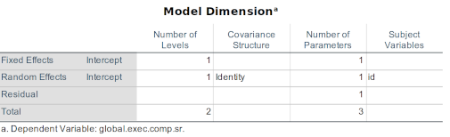
You may well be confused that the intercept term is being considered as both a fixed and an random effect—or simply that it should even be considered as a fixed effect since global.exec.comp.sr scores can clearly take on values not measured here (and thus is indeed a random variable in this sense). Indeed, we are forcing the model to do things it’s not really designed to do here^[And so starting our understanding of MLMs with an aberrant model isn’t perfect.. We will only use this model for one purpose, though, and it does meet that one goal. So, please otherwise ignore this odd structure.
Information Criteria
The two pieces of information worth noting are given in the next two tables. I will explain them in some detail now, but will not emphasize them in most of our analyses, instead concentrating on interpretations that should feel more familiar.
The first table presented after the Model Dimension table provides the Information Criteria for the model. Information criteria are important concepts and statistics in models. They represent the amount of information left in the data that is not well accounted for by the model. Yes, it’s the same concept as the error sum of squares in an ANOVA. Similarly, we are trying to minimize this residual—this unexplained variance—so a core goals here is to minimize the amount of information left in the data unexplained by the model.
The first of these information criteria is the -2 Log Likelihood (-2LL). O.K., so what is that? Let me give some background to lead into what it is and what it’s used for. The log likelihood itself is computed as part of the maximum likelihood estimation of how well the model fits the data. Again, given the model we propose, we seek to find the values for the parameters (i.e., the value of the intercept, the b- or β-weights for the factors, etc.) that are most likely given the data; we seek to maximize the chance that those parameters are correct. Without going far into the math of it, we could compute the parameter values by taking the least squares approach for each parameter and then compute the joint probability of getting those parameters (and doing this again and again, tweaking our values to try to make them better and better). However, computing that joint probability can be quite intensive—even for computers. We can loose no precision in our computations but make the math much easier if we instead try to compute the logarithm of those joint probabilities^[This is because we could have to multiply the joint probabilities but would only have to add the logs of those probabilities. Adding is less resource-intensive than multiplying.. So, we actually compute the log likelihood instead.
Again, we try to maximize the likelihood of getting those particular parameter values. Similarly, we try to maximize the log of the likelihood (of getting those values). Given how the math works, though, the log likelihood is (nearly always) a negative number. We maximize it by trying to get it out of negative territory—by having it get as close to zero as we can. So, the log likelihood is a negative number, and values closer to zero are better.
However, we multiply the log likelihood by -2 because that transforms it into a value that follows a χ2 distribution (so for all of the values in this table, SPSS is right: The information criteria are displayed in smaller-is-better form). This is where the statistics here start to get useful. Remember that the difference between two χ2 values also follows a χ2 distribution. Therefore, we can take the difference between two -2LLs and conduct a χ2-test on that difference to see if that difference score is itself significant24.
This means that we can take the -2LL computed for one model, subtract it from the -2LL computed from an other model, and then test if those -2LLs are significantly different from each other. In other words, if one of those two models fits the data significantly better than the other.
Many researchers, including Singer and Willett, call the -2LL the deviance statistic. This is really the same value (i.e., the difference between a true -2LL and a deviance statistics can be ignored). Although you will read about deviance statistics more often than “-2LLs,” I will continue to refer to them as -2LLs so it’s clearer what part of the SPSS output I’m referring to.
Now, as useful as deviance statistics / -2LLs are, there are clear limits to when they can be used. The main limitation is that one can only meaningful compare two models that are computed from the same set of data. Even removing a few cases from a set of data (e.g., by subsetting the data or filter out certain cases), we disqualify tests between them. Yes, this is even a problem if a have missing data that change the sample size between models, so one should take care about that, either removing cases listwise or by imputing values for any missing data.
Singer and Willett also discuss how one of the two models we compare should only contain a subset of the variables of the other model. In other words, one model contains, e.g., gender, race/ethnicity, and IEP status, then we can only compare that to models that either also contain those three variables plus other variables (e.g., gender, race/ethnicity, IEP status, and executive functioning) or compare it to another model that has a subset of those variables (e.g., gender and race/ethnicity). Confusingly, a model that contains a subset of variables from an other model is said to be nested in that larger model. So, succinctly, Singer and Willett argue that we can only use -2LLs to compare models if one is nested within the other.
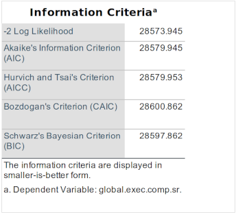
To compare non-nested models, we use either Akaike's Information Criterion (AIC) or Schwarz's Bayesian Criterion (BIC). We implement either the AIC or BIC the same way we do a deviance statistics: We take the difference between two AICs or between two BICs and see if that difference is significant.
Both the AIC and BIC are based on the -2LL. The AIC penalizes (makes the absolute value greater) the -2LL for each factor in a model so that more complex models can’t just capitalize on chance. The BIC not only penalizes for the number of factors but also for sample size, so we can’t also get better models just by having more data.
You will find either statistic reported in various articles, and either is a fine choice—unless your sample size is so large the BIC becomes necessary. Nonetheless, I tend to use BIC since that is both appropriate even for smaller samples (it simply penalizes them less) and since it is indeed more conservative.
Like the BIC, the Hurvich and Tsai’s Criterion (AICC)—more properly written AICC—also attempts to compensate for sample size. The AICC, however, is used for small sample sizes where models may not be able to fully adjust to fit the data.
Bozdogan's Criterion (CAIC) is similar to BIC. It has a stronger penalty for the number of parameters than both the BIC or AIC, but tends to converge on the same values as are computed by the BIC. Given that the BIC is more commonly reported, I think it’s fine to stick with the BIC.
Using information criteria to test models is flexible, but we will focus instead here on the more familiar F- and t-tests.
Fixed Effects
The next set of tables are a lot easier to understand. The Type III Test of Fixed Effects presents the F-score and dfs testing the significance of the fixed effects in the model. In this unconditional means model, the only term is the intercept, so all we’re testing here is whether this value differs significantly from zero.
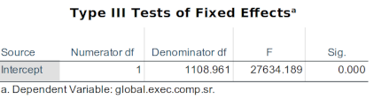
And with an F-score of 27634.2, I’d say it probably does.

The Estimate of Fixed Effects table reproduces this test (a t-score of 166.235 is equivalent to an F-score of 27634.19 since 166.2352 = 27634.19). These two tables are redundant because Intercept only has one degree of freedom here. Had we included an interaction term or a term with more than one degree of freedom (e.g., race/ethnicity as a nominal variable with teens coded as “Asian-American,” “African-American,” “European-American,” etc,), then the first Type III Tests table would give us more information about those categories.
This table also presents the Estimate of the global.exec.comp.sr term: 152.90; this is simply the mean score for the entire sample collapsed across waves.
Covariance Parameters
The covariance parameters are not interesting in this model since they are redundant with the fixed effects.
Summary
Again, one reason to compute the unconditional mean model are to test if there is an effect overall in the outcome, thus allowing ourselves to further test for effects of time and various predictors. This model also gives us a -2LL against which we can compare subsequent models, allowing us to see if predictors added to it can improve upon the prediction we would make with just knowing the overall mean for this sample of teens. You may remember we talked about the effects of predictors with just this interpretation of them.
10.11.6 Computing the Unconditional Growth Model
Remember that the unconditional growth model tests whether the outcome, here global.exec.comp.sr, changes over time, thus warranting further investigations into what other factor may predict there changes. Its goal is thus simple—and so can be our interpretation of it.
To compute this model:
Back in the Syntax window, paste in the following syntax:
TITLE "Unconditional Growth Model, p. 97". MIXED global.exec.comp.sr with wave /PRINT=SOLUTION /METHOD=ml /FIXED=wave /RANDOM intercept wave | SUBJECT(id) COVTYPE(un).Note that you can simply paste this in below the syntax for the unconditional mean model.
Highlight this syntax and run this syntax. If you’re lazy (or just already fighting off the repetitive stress syndrome you’ll get from all the typing you’ll be doing) instead of highlighting it, you can simply press
Ctrl + Aand thenCtrl + Rto run all of the commands in themlm_syntax.spsfile—another advantage of using syntax and generally learning to use keyboard shortcuts instead of a GUI. (Note you can also simply run a given command when the cursor is placed anywhere within the given command.)
10.11.7 Interpreting the Syntax
There are only a few differences in the syntax, but these are profound.
The statement is not followed not only by the Outcome (
global.exec.comp.sr) but then also by the with wave statement. TheMIXEDstatement now includes an actual model. Models for SPSS syntax are written so that the outcome is predicted with a set of factors. Here, we are only including the wave term, so that alone is added to where the predictors are expected. I need to point out another peculiarity of SPSS’s syntax here. In the MIXED command, SPSS interprets any factors that follow with to be random (i.e., continuous) effects. As we will see later, fixed effects are indicated slightly differently.The
/FIXEDsubcommand lets SPSS know which of the predictors in the model given in theMIXEDcommand are to be considered fixed factors. Yeah, wave is not a fixed factor—and we would normally not include it here—but we need to have at least one fixed factor, so we add that.In the
/RANDOMsubcommand, we again add wave. It will stay here in subsequent models since it is a random factor—as most all measures of time should be.
10.11.8 Interpreting the Results
The Model Dimension table reviews the terms in our model, showing that we now have a wave term added (temporarily as both a fixed and random effect). Note that SPSS indicates that the Number of Levels for the wave term is 1; this will come into play next.
Information Criteria
The current (unconditional growth) model differs from the previous (unconditional means) model only in that we added a term for wave. This means that the previous model is nested within the current one, and so we can use the -2LLs to compare the relative fits of these tow models to the data.
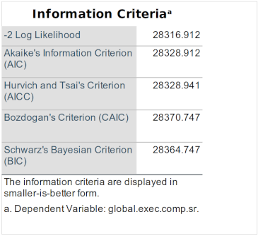
The -2LL for the unconditional means model was 28573.945; for the new, unconditional growth model, it is 28316.912. 28573.945 − 28316.912 = 257.033. Therefore, the χ2 score for a test between these two models is 257.03. The Number of Levels for the term that was added to this model (compared to the previous, unconditional means model) is 1; this is also the degrees of freedom for this χ2 score. So, our tests here is of χ2 = 257.03, df = 1. The critical value when df = 1 and a two-tailed α = .05 is χ2 = 5.02. We could justifiably use a one-tailed test since we could argue we’re testing if the χ2 is greater than zero (and where the critical χ2 = 3.84), but we’ll stick with the two-tailed test.
We can therefore conclude that adding a wave term to the model significant; improves the fit of our model to the data. In other words, we are justified to look further at the ways in which executive functions change here because their changes over time account for a significant portion of the variance in these data.
Fixed Effects
We do indeed get a similar set of information for the fixed effects tables, where the wave term is significant (F1, 654.7 = 211.33, p < .001). On average—and across all participants—the global.exec.comp.sr scores change only a little bit: 0.01 points per wave, which is not much for scores that average at 126.6. Nonetheless, these changes are significant and account for a meaningful amount of information herein.


Covariance Parameters
The covariance parameters table now includes some more information. The Residual in this table reports statistics related to the variance within each participant. The Estimate for the residual variance is quite high, indicating that a lot of variance is still unexplained. This is equivalent to Singer and Willett’s level 1 model residual. Frankly, this Residual Estimate isn’t commonly reported and is only marginally informative for one’s in-house analyses. It does convey the amount of unexplained variance left after the given model, but so do the information criteria, and those are presented in a format that is useful across models conducted on the same data in ways that are more amenable to further analyses.
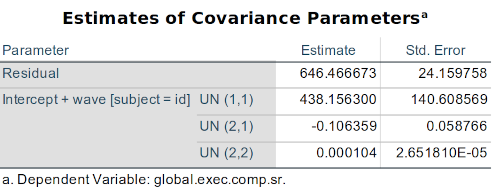
The three rows within the Intercept + wave [subject = id] section provide parameter estimates (and standard errors for those estimates) for terms that are between participants. These are terms for random effects that are part of Singer and Willett’s level 2 model. The three terms reported herein are the variance of the intercept (UN (1.1)), covariance between the intercept and wave terms (UN (2.1)), and variance of the wave term (UN (2.2)). These terms are useful to investigate how much of the residual variance remains in the various areas, but—again—further understanding of the relationships are probably better studied through careful analyses of the predictors and perhaps graphs of the residuals.
One thing to point out from these level-2 variances is that the covariance between the intercepts and changes over waves is “borderline” significant (p = .059). This suggests that there may not be a significant relationship between adolescents’ initial levels of executive functioning and subsequent changes in it.
We can see from these residuals that, although intercept remains highly predictive, there is still much we don’t understand about what affects that values. This does nonetheless reflect a large body of research indicating that much of one’s executive functioning is determined during childhood.
Summary
The unconditional change model is the second of two models that simply help establish the foundation upon which other models can be built and against which they can be compared. We do see through these two models that there are non-negligible inter-individual differences and that executive functioning does appreciably change over these administrations.
10.12 Univariate MLMs
We will next review a series—or “taxonomy”—of models each that contains one predictor (in addition to those in the unconditional models). Even with this rather limited set of variables, there are many comparisons we could make. However, we’ll keep it simple and look at the relative contributions of only three predictors on global.exec.comp.sr: gender, iep.status, and economic.distress. We will presume that the variable of especial interest here is economic.distress and whether it makes a unique contribution beyond that already made by gender and iep.status.
To investigate these three predictors, we will first look at the relationship of each one with global.exec.comp.sr alone, i.e., without the other two predictors in the model. We will also look at the relationship between each predictor and the adolescents’ initial levels of executive functioning as well as the relationship with subsequent changes in executive functioning. Each of the univariate models therefore looks at the contribution of the given predictor without consideration of that predictor’s relationship (correlation) with any of the other predictors.
These univariate models are also themselves “prefatory” ones that simply help lay the groundwork for the final few models that we would likely actually report in an manuscript. We are, of course, looking here at a few pieces of what is likely a very tangled web of influences on the lives and development of these teens. In order to understand any of it we are well-advised to first try to look at the pieces in relative isolation before considering how they may interact. We will do that now.
10.12.1 Gender
Main Effect
We will first look at whether boys’ and girls’ initial global.exec.comp.sr scores differ.
Via SPSS’s GUI
We can—and will—do this using the syntax, but the model is complex enough to serve as an example for how to do this using the GUI:
Please note that we can run a similar model via the GUI:
Click on
Analyze > Mixed Models > ``Linear...Add
idto theSubjects:field,waveto theRepeated:field, and change theRepeated Covariance Type:toUnstructuredClick
Continueat the bottomIn the next dialogue, add
global.exec.comp.srto theDependent Variable:field,genderto theFactor(s):field, andwaveto theCovariates:field- Under
Fixed..., change the middle button’s choice toMain Effects, addgenderto theModel:, and make sureInclude interceptis selected (and that theSum of squaresisType III). Adding the intercept here lets each participant and each gender to have their own beginning value. - Under
Random..., leave/make the middle button selection as after selectingFactorialand addwaveto theModel:field. - Under
Estimation..., choseMaximum Likelihood (ML)underMethodand leave all other values at their defaults. - Under
Statistics..., inModel Statistics, selectParameter estimates for fixed effectsandTests for covariance parameters. - Under
EM Means..., addgenderto theDisplay means for:field. - Finally, click
OKto run.
- Under
Via Syntax
We do this by adding only a gender term to the model. To do this, run the following syntax:
TITLE "Gender Main Effect".
MIXED global.exec.comp.sr with wave by gender
/PRINT=SOLUTION TESTCOV
/EMMEANS=TABLES(gender)
/METHOD=ml
/FIXED=gender
/RANDOM intercept wave | SUBJECT(id) COVTYPE(un).Interpreting the Syntax
The lines that differ are MIXED and /FIXED. We’ve also added a /EMMEANS=TABLES(gender) subcommand.
The MIXED command again contains the Outcome, but now followed by both a with and a by argument25. The with argument denotes the factors that should be considered as random effects (here, wave) while the by argument denotes factors that should be considered as fixed effects, like gender. Sure, gender could be seen as not measuring all possible levels of that domain, but we’ll treat is as fixed since that’s how it’s measured by the school.
In the /FIXED subcommand, we are also just adding a “main effect” of gender. This will become clearer in the next model, but for now know that we are only looking at the effect of gender on the initial (intercept) Outcome scores.
The /RANDOM subcommand has remained the same. We are again noting that wave is a random factor and that it is to be considered nested within id.
The /EMMEANS=TABLES(gender) subcommand requests that SPSS print a table of the estimated marginal means for the predictor(s) along with their standard errors and 95% confidence intervals.
The estimated marginal means are simply the means for the various levels of the given predictors that are predicted by the model (i.e., not their actual means), after partialing out the effects of any other terms. We only have one predictor in the current, so we are only partialling out the intercept here.
Interpreting the Results
At last we are looking at theoretically-interesting results. The point of the current analysis is to investigate the relationship between the adolescents’ gender and their executive functioning.
We can look at it here in two ways: the significance of gender’s model term and at the change in model fit when gender is added to the previous model. We will focus on the former, looking at the significance of the gender term itself.
The Model Dimension table summarizes the model variables, covariance structure, degrees of freedom, and which variables are nested within which:

In the Number of Parameters column, we can see in that table that the nominal gender variable contains two levels (male and female). Note, though, that in the Number of Parameters column, there is only one “parameter”; this is the number of degrees of freedom used to add this term to the model. The number of parameters will always be one less than the number of levels for that term.
Note, too, that both the Intercept and gender terms are listed under Fixed Effects. Again, SPSS considers all fixed effects to be between participants (in Singer and Willett’s level 2 model). wave remains under the Random Effects; SPSS considers all random effects to be within participants.
Fixed Effects
Intentionally, we have only one fixed effect added to the model, allowing us to investigate that effect in isolation. The effect we’re testing is whether girls and boys began this study (in sixth grade) with different levels of executive functioning.
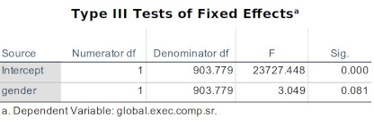
The Type III Tests of Fixed Effects table also tests the effect of gender. This test is tantamount that one would compute in an ANOVA—although here we are using maximum likelihood estimation26—so this F-score tests for mean difference between the gender groups. This F-score is not significant (F1,903.8 = 3.05, p = .081). There is insufficient evidence that boys and girls began this study in sixth grade self-reporting different levels of executive functioning.
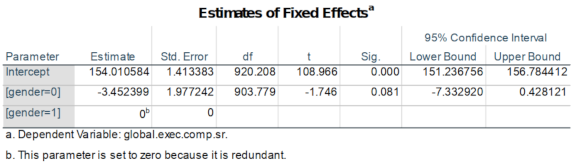
The Estimates of Fixed Effects table that comes next reflects the same results as the estimated marginal means because the predictor has only two levels. Note that there is an oddity to this table: The gender term is divided into two rows, with values given for [gender=0] but not [gender=1]27. SPSS is assuming that the highest category for this predictor (when gender = 1) is the reference group—the level against which the other category is compared. So, the test here is whether those participants whose gender = 0 (boys) have significantly different mean executive functioning scores than the reference group (girls).
The Estimates of Fixed Effects table thus indicates that boys’ scores are 3.45 points lower than girls’ scores. This value of -3.45 is also the β-weight for the gender term (sigh, when girls are defined as the reference group; were I to report this, I would reverse the sign to meet readers’ expectations).
One more thing to say about comparisons like the levels of gender in the Estimates of Fixed Effects table: SPSS always assumes the highest level is the reference group. Or at least that I don’t know how to change it away from that. This is odd and inconvenient since dummy variables are designed to have the group that’s zeros be the reference group.
The Estimates of Covariance Parameters table still presents the within-participant residual variance in the first row and variances for the intercept, intercept \(\times\) slope interaction, and slope per se, respectively. We needn’t reproduce that table here not consider it further in this context.
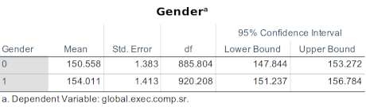
A new table has appeared after that Covariance table, here called simply Gender. These are the estimated marginal means requested by the /EMMEANS=TABLES(gender) subcommand that we added to this analysis. Again, this provides the initial global.exec.comp.sr scores the model estimates boys and girls had at the time defined as crossing the intercept. We therefore estimate that boys’ initial scores were 150.558 and girls’ were 154.011. Note that 150.558 – 154.011 = -3.45, which is the Estimates value for boys ([gender=0]) in the Estimates of Fixed Effects table.
Summary
A multilevel model of change did not find that gender significantly predicted under-served adolescent students’ initial levels of self-reported executive functioning (F~1, 907.8~ = 3.05, p = .081) when that term was included with no other predictors except terms for the intercept and time. But we are not done with gender yet. We did not find that girls and boys started middle school with different levels of executive functioning, but this does not mean that they will not change as time goes by. Let us now look into that.
Gender × Time Interaction
A strategy for investigating factors in this fashion includes one piece of information at a time to see what that adds to our understanding: We proceed in careful, precise steps to ensure accurate understanding before building those pieces together into a larger picture. Therefore, we will look now only at how gender may affect changes in executive functioning over time—independent of any effect gender (could have) had on the initial levels of executive functioning.
To do this, we simply add only a gender × wave interaction term to the “null” comparison model that contains only intercept and wave terms with the following syntax:
TITLE "Gender Interaction".
MIXED global.exec.comp.sr with wave by gender
/PRINT=SOLUTION TESTCOV
/EMMEANS=TABLES(gender*wave)
/METHOD=ml
/FIXED=gender*wave
/RANDOM intercept wave | SUBJECT(id) COVTYPE(un).Interpreting the Syntax
The only difference between this model and the one we analyzed in the Gender Main Effect section is that the /FIXED=gender*wave line where we have a gender × wave interaction term added instead of a gender main effect term.
Interpreting the Results
Information Criteria
We will not review the information criteria for this model. Neither it nor the previous model containing the gender main effect are nested within each other. We could use AIC (or BIC) here to compare whether gender predicting intercept accounts for more information in the data than gender predicting changes in executive functioning, but this is not of great interest here. In addition, the test of the term itself suffices to study its effects.
Fixed Effects
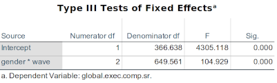
The gender × wave interaction is significant(F2, 649.6 = 104.93, p < .001). Note that this is an interaction between a variable nested within participant (wave) and an other variable that is between participants (gender), but this still appears in the Fixed Effects tables. It is interpreted straight forwardly that the slopes of the executive functioning scores is significantly different for the boys and girls.
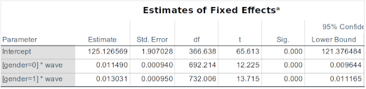
The Estimates of Fixed Effects table gives us insight into the nature of this interaction: On average, boys’ executive functioning scores increase 0.011 points per wave (here, that’s essentially per academic year) while girls’ scores increase slightly more, 0.013. Both of these increases—small as they are—are significant here. The standard errors help explain why: There is not much variance in the rates of change, so even small effects are detectable.
Note that the Estimates of Fixed Effects table presents results for analyses of the individual levels of the gender \(\times\) wave interaction. We are essentially conducting post hoc comparisons of the levels to see if both are significant. If the F-test given in the Type III Tests of Fixed Effects table was not significant, then these t-tests of the levels are not warranted. SPSS would report them anyway, though, so only interpret the level tests if the F-test is first significant.
Covariance Parameters

An additional piece of information become interesting in the Estimates of Covariance Parameters table. Remember that the UN(2,1) row presents the covariance between the intercept and time terms. Using a Wald test, this relationship is significant (W = 4.28, SE < 0.001, p < .001) and positive (b = 0.00012), if rather small. This suggests that teens with larger executive functioning scores tended to have (slightly) more positive slopes than teens with smaller scores.
Summary
The rather small variance in the rates of change in executive functioning allowed us to investigate their relationships with gender in some detail. We found that overall adolescents with grater executive functioning scores tended to have score that got even greater throughout their middle and high school grades while adolescents with lower scores tended to have scores that further decreased: To a small but significant degree, small initial differences in executive functioning tended to grow in difference.
We also found that girls’ executive functioning scores tended to become slightly greater over time. These executive functioning scores are coded so that lower scores denote stronger executive functioning, so—surprisingly—girls tended to show a greater reduction in their self-reported executive functioning relative to boys. Findings that disconfirm our expectations tend to garner ore attention (or, well, they should), so it may be worth, e.g., looking at comparable executive functioning scores reported by teachers about these same students; perhaps the effect here is not replicated in how some others view these teens’ executive-functioning-related behaviors. Perhaps instead the changes in self-reported scores are more related to changes in, e.g., one’s self confidence.
10.12.2 Special Education
We next next review a similar pair of models to investigate the effects of IEP status on both initial executive functioning levels and subsequent changes thereof. Just as a reminder, an IEP is an “individualized education program” (or “plan”) designed to help address students with special needs that have been diagnosed to affect their academic performance.
Main Effect
One advantage of using syntax is that it is sometimes easy to conduct a bevy of analyses while making only a few small changes much more quickly than one could do through a GUI. Here, we need only change the title (for future reference) and change instance of the word “gender” to “iep.status”.
Or, simply paste the following syntax into the Syntax Editor:
TITLE "IEP Status Main Effect".
MIXED global.exec.comp.sr with wave by iep.status
/PRINT=SOLUTION TESTCOV
/EMMEANS=TABLES(iep.status)
/METHOD=ml
/FIXED=iep.status
/RANDOM intercept wave | SUBJECT(id) COVTYPE(un).Interpreting the Syntax
This syntax will conduct the same “main effect” analysis testing whether students with and without IEPs differ significantly in their initial, sixth-grade levels of self-reported executive functioning. The only changes in it (outside of the title) are changing gender to iep.status. a change one could make by searching and replacing that phrase, but then also reviewing the code to ensure doing it automatically didn’t have any unintended consequences elsewhere in the code.
Interpreting the Results
Since we have already detailed the particulars of the results when investigating gender, we will be more brief in our coverage of iep.status. Hopefully this will help reinforce the main points and encourage practice remembering.
Information Criteria
We can test the change in fit of the entire model through the information criteria. We could use the -2LL (deviance) statistics to compare this to the unconditional means or growth model since both of those models are nested withing the current: They contain only subset of the terms in the current model.
The current model has one more term than the unconditional growth model—iep.status—which the Model Dimension table tells me adds only one to the Number of Parameters. Therefore, I could test for a change in model fit by subtracting the -2LL for the current model from the -2LL for the unconditional growth model and testing that difference against a critical χ2 value with on degree of freedom.
The current model has two more terms than the unconditional means model: the iep.status term and the wave term that was added in the unconditional growth model. The current model thus has two more degrees of freedom than the unconditional means model28, so the difference in -2LLs would be compared against the critical χ2 value for 2 dfs.
Fixed Effects
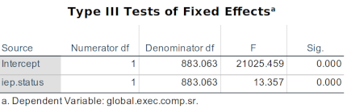

The Type III Tests of Fixed Effects and the Estimates of Fixed Effects tables indicate that the iep.status term is significant.
Since iep.status scored as a dummy variable, the levels for it given in Estimates of Fixed Effects table are interpreted somewhat unconventionally: there are zeros in the row for [iep.status=1] (denoting that the student has an IEP). We can nonetheless use this table to interpret the magnitude of the effect of having an IEP since those without one ([iep.status=0]) begin the study with an average of 7.8 points less on the scale (the BRIEF-SR GEC) than those with an IEP; since lower scores denote stronger executive functioning, this suggests that those without an IEP already have stronger executives functions than those with an IEP.
Covariance Parameters

The Estimates of Covariance Parameters table presents the residuals at both the between-participant level (level 2) as Residual and the variances and covariances of the within-participant (level 1) terms below that. This table shows again that there is significant variance yet unexplained and that the intercepts covary significantly with the changes—note, though, that this is not changes in outcomes related to IEP status since we have not included an iep.status × wave interaction term to the mode; this is simply whether intercept and slope are related in the overall set of data.
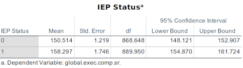
The Estimated Marginal Means table—entitled by the Label for the variable reported—indicates that the model estimates that the mean global.exec.comp.sr score for students without IEPs is 150.5, which is 7.8 points lower than the mean score estimated for those with IEPs.
Summary
We found that IEP status is significantly related to initial levels of executive functioning. Indeed, it appears rather predictive of this initial level given the magnitude of the effect.
IEP Status × Time Interaction
We now look at the effect of IEP status on changes in executive functioning over time. Looking at it in a separate model like this helps compare differences in model fit. It also lets us compare how much the effect of IEP on intercept is related to the effect of IEP status in subsequent changes in the outcome because we look at both effects in isolation and then can look at them together in the same model.
Once again, we simply change change gender to iep.status is the model containing the interaction term:
TITLE "IEP Status Interaction".
MIXED global.exec.comp.sr with wave by iep.status
/PRINT=SOLUTION TESTCOV
/EMMEANS=TABLES(iep.status)
/METHOD=ml
/FIXED=iep.status iep.status*wave
/RANDOM intercept wave | SUBJECT(id) COVTYPE(un).Interpreting the Results
Information Criteria
Note in the Model Dimension table that the iep.status \(\times\) wave interaction term has 2 degrees of freedom—not 1. An addition degree of freedom is used to account for interactions, but only one for the first interaction; if we had added two interactions with the same within-participant term, we wouldn’t need to continue to add more than one degree of freedom per interaction. In other words, if we had included both an iep.status \(\times\) wave and a gender \(\times\) wave interaction, we would only need to add the additional degree of freedom (for the interaction with wave) once—not twice. This is confusing, can better seen by an example, which I when we compare more complex models, below.
Fixed Effects

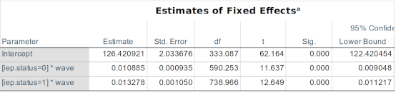
IEP status significantly predicts changes in executive functioning over the middle and high school years among these adolescents. The relationship is rather strong even though the effect is still not large: The global.exec.comp.sr scores for those with IEPs move toward levels indicating worse executive functioning at the mean rate of about 0.013 points per year, compared to those without IEPs whose scores more in the same direction a bit more slowly (at the rate of about 0.011 points per year).
Covariance Parameters
The pattern of significances among the random effect terms when iep.status \(\times\) wave is added to the model reflects that found when iep.status was added. The values differ, e.g., for the intercept × change term (UN(2,1)) because we are estimating the effect with somewhat different information.
Summary
Not only do those students with IEPs already come into the range of grades measured here with significantly worse self-reported executive functioning, but they also tend to show significantly greater depreciation in those faculties throughout their secondary grades.
We chose to investigate executive functioning because we anticipated nurturing its development could help those who are struggling to overcome challenges both within and without. Seeing executive functioning weaken most among those who may benefit most from it seems alarming.
10.12.3 Economic Distress
And yet among all of the challenges faced by these teens, their economic ones may be most pervasive. Like race/ethnicity, the effect of poverty is often misattributed. Having relatively little money is among the least of the challenges faced by the poor; more salient is living in less safe, more stressful, and more dangerous conditions; limited access to healthy food and lifestyle choices; fewer opportunities for success and many voices taking their failure for granted; and several other factors that could affect not only the development of their executive functioning, but also whether they have disabilities warranting IEPs and whether they are correctly diagnosed with those needs. All of this may also be filtered through the increasing different experiences of boys and girls in these environments.
In short, economic.distress may affect initial levels of executive functioning, subsequent rates of development. It may also interact with one’s special needs—and this all may be filtered through the lens of being a boy or girl.
Main Effect
We are presuming here that our main interest is indeed on economic distress and whether any relationship it has with executive functioning is moderated by IEP status and gender—or the extent to which its effects are independent of those other factors.
We begin this phase of our analysis by first looking at the relationships of economic distress alone, without consideration of the effects of IEP status or gender. And first, the relationship with initial levels:
TITLE "Economic Distress Main Effect".
MIXED global.exec.comp.sr with wave by economic.distress
/PRINT=SOLUTION TESTCOV
/EMMEANS=TABLES(economic.distress)
/METHOD=ml
/FIXED=economic.distress
/RANDOM intercept wave | SUBJECT(id) COVTYPE(un).Interpreting the Results
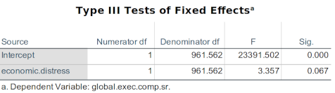

Unexpectedly (after my harangue at least), economic.distress does not have a significant effect on the initial levels of executive functioning.
IEP Status × Time Interaction
We now investigate the effects of economic distress on subsequent changes in executive functioning with the following syntax:
TITLE "Economic Distress Interaction".
MIXED global.exec.comp.sr with wave by economic.distress
/PRINT=SOLUTION TESTCOV
/EMMEANS=TABLES(economic.distress)
/METHOD=ml
/FIXED=economic.distress*wave
/RANDOM intercept wave | SUBJECT(id) COVTYPE(un).Interpreting the Results
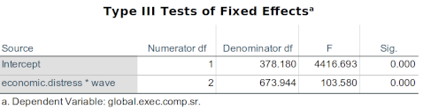

Skipping to the variable-level tests, we see that—taken in isolation—economic distress has a clearly significant effect on the development of executive functioning throughout middle and high school. The difference in slopes for those above and below the criterion for being considered “economically distressed” show only slightly different trajectories, but the standard errors again indicate why this is significant.
10.12.4 Summary of Univariate Model Analyses
The adolescents’ initial levels of executive functioning were significantly predicted by whether the teen had an IEP, but not by the teen’s gender nor whether they were experiencing economic distress. All of the predictors were significantly related to changes in executive functioning over time.
These results, however, were found when looking at each relationship separately. It is entirely plausible that they will interact. For example, the effect of economic distress may be intermixed with the effect of having an IEP, and gender may moderate either effect.
Even among this limited set of variables, there are many further analyses we can conduct to better understand what is happening in these teens’ lives. We will look only at one specific scenario, though: How the effects that we found significant in isolation interact when included together.
We will look at the significant relationships in two steps. First, we will include the gender and IEP status effects together in a base model. We will then add in economic distress’s interaction to this model to see whether this adds new information to our understanding.
10.13 Multivariate MLM
We will now demonstrate using multiple predictors, thus creating a multivariate MLM.
Since we are now using more than one predictor, there is the chance of multicollinearity affecting the value (and stability) of the model parameters—especially for those predictors that are highly correlated with each other. Although there are analyses that can detect multicollinearity in multi-level (hierarchical) models (q.v., Yu et al., 2015), reviewing them is outside of the pale of this course. Note that in general, multicollinearity is usually less of a problem than it’s sometimes conceived to be, and that it matters in MLMs more when it is between nested groups than within one.
10.13.1 Base Model
We create our base, comparison model with:
TITLE "Gender and IEP Status".
MIXED global.exec.comp.sr with wave by iep.status gender
/PRINT=SOLUTION TESTCOV
/METHOD=ml
/FIXED=iep.status iep.status*wave gender*wave
/RANDOM intercept wave | SUBJECT(id) COVTYPE(un).This includes main effect and interaction terms for iep.status and the interaction term for gender.
Interpreting the Results
Information Criteria

We will return to using the information criteria (viz., the -2LL—or deviance—statistic) in addition to reviewing the tests of the individual parameters. First, note that this model is using 9 dfs to estimate the values for the parameters.
We can see from this Model Dimension table that a degree of freedom (a parameter) was only added once—here listed in the iep.status * wave row, but it would have been listed in the gender * wave row if we had added gender*wave first in the syntax. This is because we only need to add that parameter once for all interactions with that within-participant term (wave). When we add the economic.distress*wave term, below, we will thus only be adding one additional parameter—not two.

Also note that the -2LL for this base model is 25594.418.
Fixed Effects

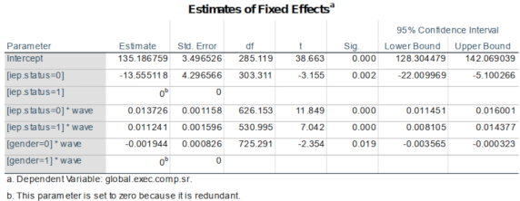
When all three terms are added to the model, the iep.status * wave interaction is no longer significant. Both of those with and without IEPs show changes in executive functioning, but since the omnibus F-test did not find that term to be significant, those changes over time are not significantly different.
Covariance Parameters
We are not analyzing the covariance terms here. Since the model is more complex, the weights among the residuals and within-participant variances and covariances are harder to interpret (without direct comparisons to other models to disentangle these effects).
Summary
This is the base model, against which we wish to compare the effects of economic distress. Therefore, the significances of the terms are not of primary interest here. Nonetheless, it is interesting to see that changes over time due to IEP status are no longer significant when we also account for changes due to gender.
10.13.2 Final Model
To this base model, we now add one addition term: the economic.distress * wave interaction. We are therefore testing here whether the economic distress contributes significantly to our understanding of adolescent development of executive functioning beyond that already made by the other terms. If economic distress is significant, then the effect it has on development is at least partly due to factors independent of gender and IEP status. If economic distress is not significant, then the relationship we found earlier between it and executive functioning development may be sufficiently accountable by gender and IEP status.
The syntax for this final model is:
TITLE "Adding Eco Dis Interaction to Model w/ Gender & IEP Status".
MIXED global.exec.comp.sr with wave by economic.distress iep.status gender
/PRINT=SOLUTION
/METHOD=ml
/FIXED=economic.distress*wave iep.status iep.status*wave gender*wave
/RANDOM intercept wave | SUBJECT(id) COVTYPE(un).In this syntax, we have added economic.distress to the MIXED command and the economic.distress * wave interaction to the list of /FIXED parameters.
Interpreting the Results
Information Criteria

Note that we only added one additional parameter: The base model (without the economic.distress * wave interaction) had 9 Total parameters whereas the current model now has 10.
We can see in the Information Criteria table just below that the -2LL for this extended model is 25592.703. The 2LL for the base model was 25594.418; the difference between these two models is 25594.418 – 25592.703 = 1.75. The critical χ2 for 1 df is 5.02 for a two-tailed test, or 3.84 for a one-tailed test; in either case, the economic distress term did not make a significant co0ntribution to the fit of the model to the data.
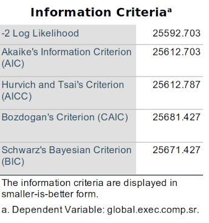
Fixed Effects
This non-significance is reflected in the variable-level tests:

The omnibus F-test did not find the economic.distress * wave term to be significant. Therefore, the additional tests of the levels of the economic.distress * wave interaction are not warranted (even though they are still given):

Summary
We know from our univariate analysis that economic distress—when taken alone—significantly predicts changes in executive functioning. However, we now see from this analysis that the effect of economic distress here is arguably explainable through the effects of IEP status and/or gender.
Of course, this oughtn’t be the final word on the issue. We do not know yet if the covariance between economic distress and changes in executive functioning overlaps that of IEP status, gender, or both. We could look at this by next taking out those terms systematically. We could also, e.g., add an economic.distress * gender * wave interaction to test the effects of more complex relationships.
Wholly beyond the pale of the current chapter would be to see if perhaps iep.status (or maybe even gender) mediate the relationship between economic.distress and wave. That will require another course to discuss—perhaps one on measurement and factor analysis….
Monsalves et al. (2020) provides good advice on writing up models like these. A couple other guides are given in the Resources section of Chapter 3: Writing Results Sections.
10.14 Additional Resources & Topics
10.14.1 Some Other Ways to Analyze Longitudinal Data
Statistical Process Control
Statistical process control is a more graphical approach to longitudinal analyses. It focuses on visually scanning for changes in some outcomes up to and then after some discrete event, like when an intervention or new procedure was implemented.
Some resources about it are:
- [Statistical Process Control], a supplement to Polit & Beck (2017)
Although I’ll be talking about “participants” that we’re studying over time, we could just as easily be studying something else that has different waves of data attached to it, such as the number of falls in a given unit over the course of a week.↩︎
Variables like this—that can have meaningful values outside of the that our instruments can measure—are called “censored.”↩︎
Singer and Willett explain this well in the context of obtaining more precise (defined as an efficient measure that quickly hones in on the true, underlying score). There, they note that simply increasing the variability of when (in time) measures are taken helps determine the rate (e.g., slope) of change. An example of why this is true: Imagine I want to draw a line on a wall the is parallel to the floor. I can do this by using a ruler to measure the same distance from the floor, make marks on the wall at each measurement, and then lay the rule flat along those marks on the wall to draw my line. I will have the most luck in actually making a parallel line of I make my marks at different places along the wall—and especially if those places I mark are far apart.↩︎
Sure, maybe because of a ceiling or floor effect. But even more generally, people who, e.g., start with lower scores will also be more likely to end with lower scores.↩︎
It’s also called a “two-way (or two-factor) ANOVA with repeated measures.” If there are more factors in the model, it would be called a three-way, four-way, etc. ANOVA with repeated measures.↩︎
I’ve avoided mentioning this pretty much every time I mention post hoc comparisons. Even within the realm of level comparisons, there are alternatives, most notably planned comparisons, which are conducted instead of an omnibus ANOVA followed by post hoc analyses. Planned comparisons are preferred if one knows ahead of time (I.e., they’re planned) which specific subset of comparisons between levels one wants to conduct. One then uses, e.g,. t-tests to compute those specific tests and no other inferential tests for those data. Planned comparisons tend to be more powerful, but you need some discipline (and, of course, specific questions you want answered) to use them. They do tend to get short shrift, though.↩︎
This website has a pretty simple and clear explanation of the ways the sums of squares are computed.↩︎
If you’ve been reading these footnotes and thinking really deeply about ll of this, well, first, thanks. Second, if you have, then you may have reflected that if it really is simply whether the experimental-group participants showed greater pre-post differences and did the control-group participants, then we could simply conduct a planned comparison of this—you’re right! If you also reflected how this kinda looks like a t-test of pre-post differences scores like I first listed in this section…yeah, you’re right.↩︎
It’s called sphericity (it’s also called circularity, and a type of compound symmetry) because it posits that—with three waves—the variance in wave 1 equals the variance in wave 2 which equals the variance in wave 3, or \(\sigma^2_{wave 1} = \sigma^2_{wave 2} = \sigma^2_{wave 3}\). They create a little circle—or I guess sphere—of the variances all being equal to each other.↩︎
There are other ways to handle time—and even ones more flexible than MLMs. Latent growth curve (LGC) modeling is one example that allows even finer tests of change over time, e.g., that different participants show different growth curve (say, some showing linear growth while others show exponential.)↩︎
As well as for estimating the intercept if the intercept is set to be something other than one of the waves, e.g., if you don’t/can’t assume the first wave of data is the intercept for the participants.↩︎
(Bernal et al., 2017) provides a good introduction to interrupted times series designs and their analyses. Note the slight correction to this paper in (Bernal et al., 2020).↩︎
It is the number of days since January 1, 4713 BCE, presuming use of the modern. Western calendar to count back that far. It was developed by an historian, Joseph Scaliger (whence the date range), and named after his father, whence the important-sounding name. Note, however, that the dates here are not computed along the lines set out by Scaliger, but a derivative method used by a standard package in the
Rprogramming language.↩︎To finally create a footnote of actual value: In the early stages of this ling of research, I didn’t limit myself to using Julian age, but also, e.g., simply used the calendar year or—at most—semester. However, those measures of time proved not to be precise enough to track the rather subtle effects we investigate here. Only when I used Julian dates—i.e., only when I measured time as precisely as I could—did I reliably find interesting insights. I guess I shouldn’t have been surprised that analyses of times-varying effects benefited from good measures of time.↩︎
“STEM” is the rather aspirational acronym for courses related to science, technology, engineering, and math.↩︎
For match merges like this, it’s arguably easier to have only the data set to which you want to add files open and to access the closed data set from An external
SPSS Statistics data filefield in theAdd Variables to Xdialogue since you needn’t worry about which open set is which, but I wanted to show you the more involved way so you know how to do that. The other way can be sufficiently covered in a simple footnote.↩︎We can also get the syntax from the journal file. The location of the journal file can be found by going to
Edit > Options > File Locationsand looking under theSession Journalsection for theJournal filefield. Note thatRecord syntax in Journalmust be selected, but it is by default.↩︎SPSS pus certain elements in upper or lower case to help distinguish things, but case doesn’t. You can write SPSS syntax in what case you want.↩︎
You may notice that SPSS proffers suggestions for syntax as you type. You can select the appropriate command from the proffered list by hitting
Enter. In addition to this as a guide to possible options and how to type them, you can access a syntax reference sheet viaHelp > Command Syntax Reference.↩︎Or don’t actually type all of that; just know that you can add comments like this, and that that is what this subcommand is doing.↩︎
Command + Son a Mac.↩︎Indeed, SPSS can create just that via
Edit > Options > Generalwhere you can selectRecord syntax in journalto have any syntax—including that accessed via the GUI—recorded to a.jnlfile.↩︎“Stochastic” in statistics denotes randomness that is indeed truly random, i.e., that indeed have no bias.↩︎
If that χ2 difference score is significantly different from zero, to be exact—but that’s a lot of “differences” to digest in one sentence.↩︎
This is one of the main ways that my syntax differs from that posted in the companion website to Singer and Willett’s book: They don’t separate out effects into by statements.↩︎
The ordinary least squares estimation one uses in an ANOVA arrives at the same outcome as maximum likelihood estimation—when the assumptions of the ANOVA are met (viz., when residuals are truly normally distributed).↩︎
It is my own convention to always set dichotomized gender so that female = 1 (and male = 0) whenever it is dichotomized as such, but always following the same routine makes it easier to remember and interpret. This also seems to me to give a bit more prominence to women, which is never a bad thing. Being dichotomized, though, we know nothing about the other vast and varied facets of sexual identity.↩︎
It is not always the case that a new term has only one degree of freedom. Interaction terms rarely will, and the
ethnicitynominal variable has several. Check theModel Dimensionstable to see how many degrees of freedom—Number of Parameters—each term has.↩︎